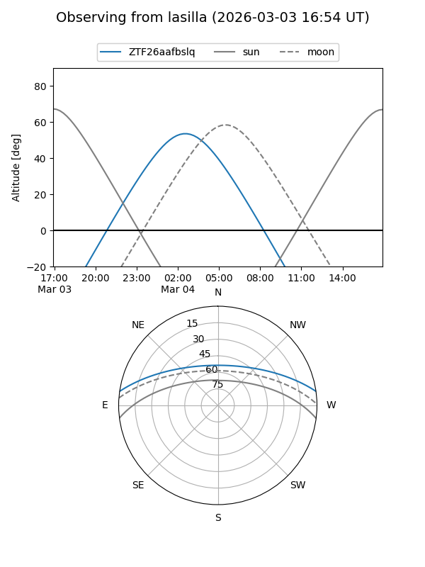
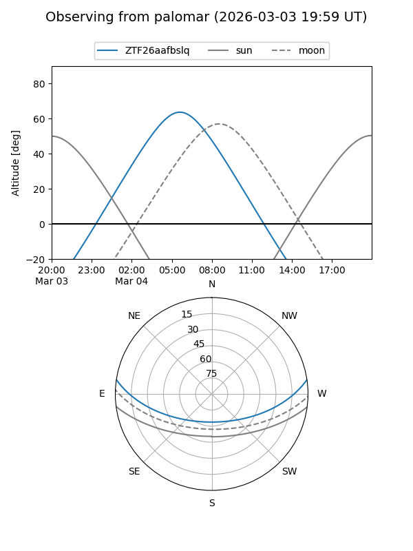

ZTF26aafbslq
Target ZTF26aafbslq at 2026-03-04 07:02
Aliases and brokers:
FINK: link
Lasair: link
ALeRCE: link
alt names
ZTF26aafbslq (ztf,fink_ztf)
Coordinates:
equatorial (ra, dec) = 128.9102,+7.20306
equatorial (HMS+DMS) = 08:35:38.46,+07:12:11.00
galactic (l, b) = (218.5120,+26.41970)
Flags:
Photometry:
last ztfg=19.01
1 ztfg detections
Lightcurve
Visibility


Additional plots